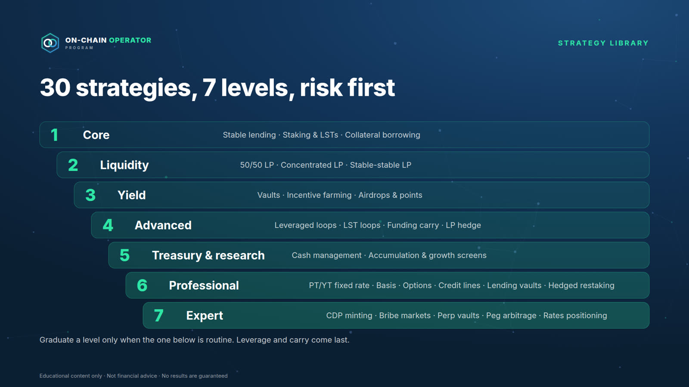
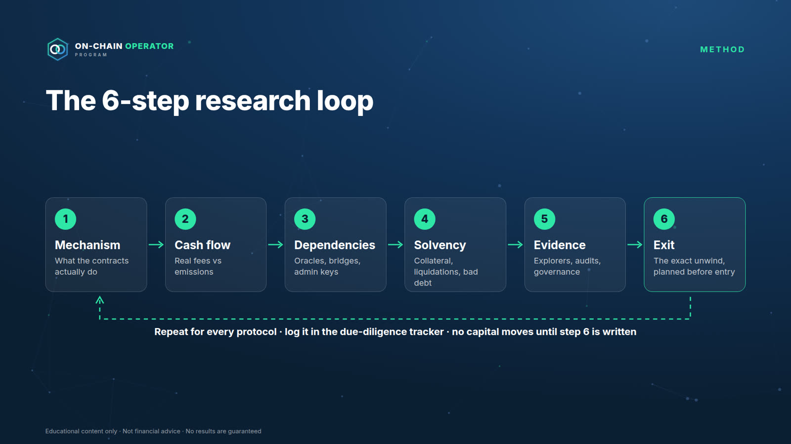
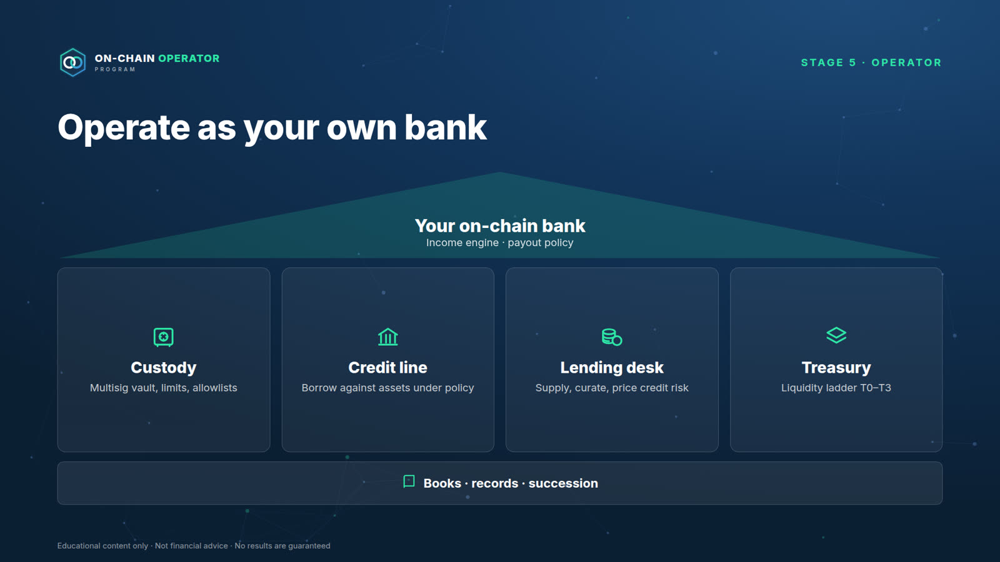

From zero to your own on-chain bank.
Learn DeFi from first principles to professional strategies, then run your capital the way a bank runs its book. Watch the 3-minute overview.
Most people enter DeFi through a number.
A 12% APY. Operators start with a different question: what am I being paid to risk, and how do I get out?
Mistakes that can’t be undone
The wrong network, a leaked seed phrase, one bad approval. On-chain there’s no chargeback.
Yields nobody can explain
Until the subsidy stops. If you can’t name what pays the yield, you’re the one paying.
Borrowing with no buffer
One sharp move and collateral is sold automatically, at a penalty. No margin call first.
No plan for the way out
If you can’t explain the unwind, you don’t understand the position yet.
On-chain, there’s no help desk. The only protection is the process you follow before you act.
Six stages, done in order.
Each stage unlocks when you pass the one before, so beginners reach leverage only after safety. Every module opens with a 10-minute Mastery Starter that takes you from zero to ready.
Zero
Open an account, buy safely, set up a wallet, first transfer, practise on a test network.
Foundations
Protect a wallet, read any transaction, swap and provide liquidity deliberately.
Practitioner
Borrow with a buffer, split any yield into what pays it, map infrastructure risk.
Analyst
Research any protocol with a 6-step loop and read on-chain data without fooling yourself.
Strategist
30 strategy playbooks, fixed and hedged yield, stress tests and an incident plan.
Operator
Run your own on-chain bank: balance sheet, custody, credit line, liquidity ladder, income engine.
15 modules, 107 lessons.
Every lesson has an objective, a plain-English explanation, a worked example with the numbers shown, a checklist you do for real, and a quiz. Every lesson has its own narrated video.
Crypto From Zero
Go from never having owned crypto to a secured exchange account, a backed-up wallet, a first transfer you made yourself, and a first practice DeFi transaction.
Foundations & Safety
Set up and use a wallet safely, and know what can go irreversibly wrong before any capital moves.
Trading On-Chain
Execute a swap or LP position deliberately, understanding price impact, fees, impermanent loss and MEV.
Lending & Leverage
Borrow against collateral with a buffer and a written defence plan.
Yield
Split any APY into organic vs subsidised, and name the risk being paid for.
Infrastructure Risk
Map every bridge, oracle, L2 and contract a position depends on.
Protocol Research
Complete a full due-diligence file on a real protocol.
On-Chain Analytics
Read on-chain data without over-interpreting it.
The DeFi Operating System
A written portfolio plan with risk buckets, limits and an emergency plan.
DeFi vs Grid Bots
Choose the right tool for the market, and run both as one system.
Advanced Yield Engineering
Build fixed, hedged and structured yield, and know exactly what each position is short.
Hedging & Risk Engineering
Hedge the risks you don't want, stress-test the portfolio, and have an incident plan ready.
Operate as Your Own Bank
Run your crypto the way a bank runs its book: a balance sheet, a custody policy, a credit line, a liquidity ladder, a lending desk and records someone else could follow.
The Income Engine
Design an income portfolio, measure expected income after expected losses, and set a payout you can sustain.
Automation & Mastery
Monitor and automate safely, run multisig operations, and complete the operator capstone.
30 strategies. Each one shows how it loses money.
From simple lending to fixed-rate yield, basis trades, options and hedged positions, in seven levels. Every playbook comes with its maths, its kill rules and its failure modes.
collateral = 10 ETH × $3,000 = $30,000
debt = $12,000 · LTV 40% · LT 0.80
health factor = 30,000 × 0.80 ÷ 12,000 = 2.00
liquidation price = 12,000 ÷ (10 × 0.80) = $1,500 (−50%)

Research any protocol before any capital moves.
A six-step research loop and on-chain analytics, taught without over-interpreting the data. You finish with a real due-diligence file.
- Mechanism and cash flow: fees separated from emissions, with sources
- Dependency map: oracles, bridges, admin keys, stablecoins
- A verdict: size, conditions and the exit

Operate as your own bank.
The disciplines a bank uses, applied to your own capital. It’s a method, not a licence or a financial service.
- Balance sheet and records you can hand to an accountant
- Multisig custody with limits and a tested recovery
- A credit line against your own assets, with a written policy
- A liquidity ladder, so you’re never a forced seller
- An income engine that pays out less than it expects to earn after expected losses, never from principal

A process, not predictions.
Typical crypto course
- Signals and hot tips
- Chases the highest APY
- Risk in the small print
- Projected returns
On-Chain Operator Program
- A process you can repeat on any protocol
- Asks what the yield is paying you for
- Risk first, with written kill rules
- Honest measurement: income after expected losses
Course and Live.
| Included | Course | Live |
|---|---|---|
| 15 modules, 107 lessons, zero to operator | ✓ | ✓ |
| A Mastery Starter at the top of every module | ✓ | ✓ |
| A narrated video for every lesson, plus 15 module intros | ✓ | ✓ |
| 30 strategy playbooks with maths and kill rules | ✓ | ✓ |
| Printable Day-1 Setup Kit | ✓ | ✓ |
| 20 calculators and 17 worksheet templates | ✓ | ✓ |
| Interactive Course Hub with progress tracking | ✓ | ✓ |
| Analyst and operator capstones, with certification | ✓ | ✓ |
| Live group sessions | — | ✓ |
| Capstone and portfolio-policy reviews | — | ✓ |
| Price | $15,000 one-time | On application |
Lifetime access to the course. Live tier pricing is set on your call.
Who it’s for.
For you if
- You’re a complete beginner who wants to learn DeFi properly, with a process
- You trade or use Grid Bot Builder and are ready to operate on-chain
- You hold meaningful crypto and want income and liquidity from it without risks you don’t understand
Not for you if
- You want guaranteed returns or signals to copy
- You won’t self-custody or follow a written policy
Application-only, in three steps.
Apply
A short form: your experience, your goal and the capital you plan to operate.
A 30-minute fit call
We’ll tell you honestly if it isn’t a fit, and point you to a better starting place.
Enrol
If it is a fit, you get your enrolment link and start with Module 0 and the Day-1 Setup Kit.
Questions.
I’ve never owned crypto. Is this for me?
Yes. Module 0 assumes zero knowledge and walks you through every setup step in order: securing your email, opening and locking down an exchange account, your first purchase, setting up and backing up a wallet, your first transfer, and a first practice DeFi transaction on a free test network. It ends with a printable Day-1 Setup Kit.
Do you manage my funds or need my keys?
Never. You keep custody. We will never ask for a seed phrase, private key or API key, and anyone who does is a scammer.
Will I make money or earn an income?
The program teaches you to build and run an income portfolio and to measure it honestly: expected income after expected losses, with a payout below that. It doesn’t promise or project returns, and every strategy is taught alongside how it loses money.
What does “operate as your own bank” mean?
Running your crypto with the disciplines a bank uses: a balance sheet, custody controls, a credit policy, liquidity management and records. It’s a method, not a licence or a financial service.
How long does it take?
It’s self-paced with lifetime access. Stages unlock as you pass the previous stage’s quizzes, so beginners reach leverage only after safety.
How does this relate to Grid Bot Builder?
Module 9 shows how on-chain liquidity and exchange grid bots do similar jobs, and how to run both in one portfolio.
What’s the refund policy?
A 14-day conditional refund: a full refund within 14 days of purchase if you’ve completed no more than 10% of the lessons, haven’t submitted a capstone and haven’t used a live session or review. Duplicate purchases and access problems we can’t fix are always refunded. No refunds based on investment results. The full policy is shown at checkout.